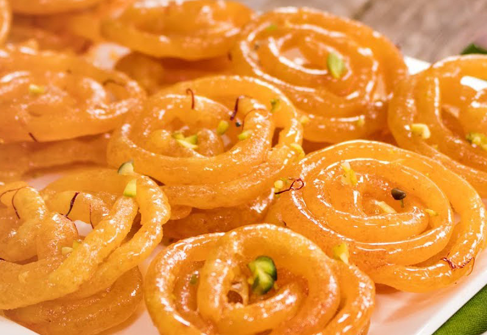

Admin
March 28, 2021
2 Commets
Old Delhi Breakfast Walk
Early mornings at Old Delhi (Purani Dilli) is a tranquil affair. A stroll across these nearly deserted lanes will take you back in time. It is a fascinating experience to observe the unusually quaint and serene morning scenes at an otherwise chaotic marketplace and when it is teamed up with mouth-watering food and this wondrous exploration transmutes into an indelible experience.